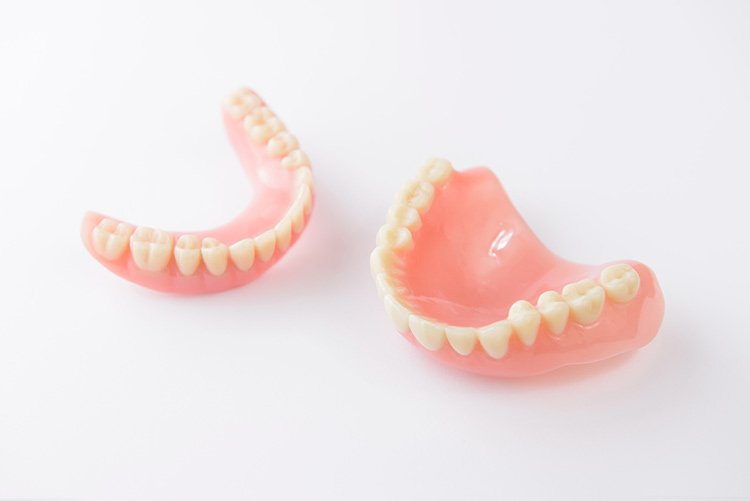
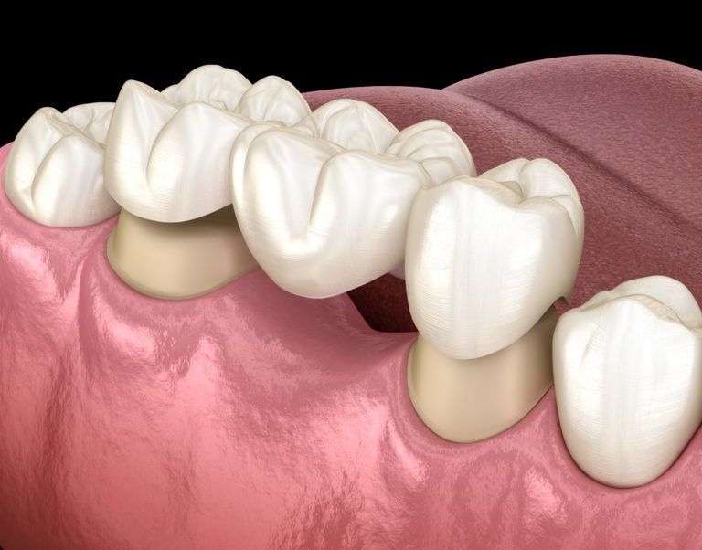
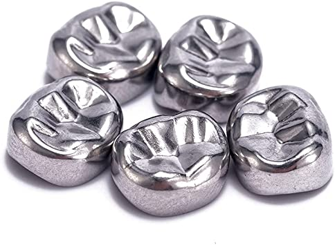
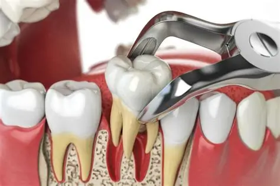
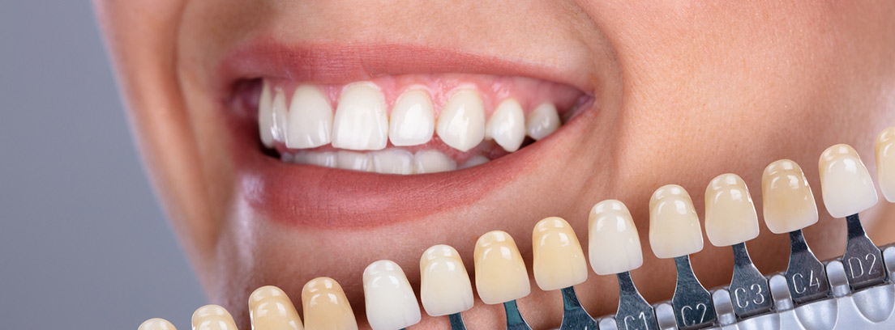
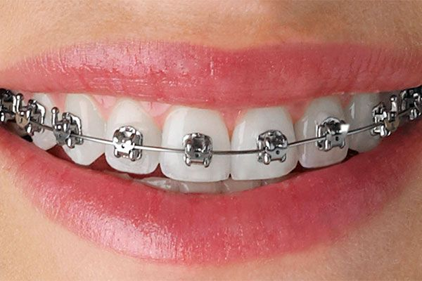

Tratamientos
El exito es la suma de cada uno de nosotros corrigiendo una sonrisa

Protesis Dentales
Las dentaduras postizas son dispositivos protésicos que reemplazan los dientes perdidos, pueden ser postizas, parciales y completas.

Puentes
Los puentes se usan para reemplazar dientes faltantes.Los puentes son dientes falsos anclados en su lugar por los dientes vecinos. Consiste en dos o más coronas en los dientes de anclaje y los dientes que se reponen entre ellos, al centro.

Coronas
Una corona es una cubierta que se ajusta sobre un diente que ha sido dañado por caries, que está roto, manchado o mal formado.Puede ser de acrílico, metal, porcelana o porcelana adherida al metal.

Extracciones
Es posible que sea necesario extraer un diente gravemente dañado.También podría ser necesario extraer algunos dientes permanentes para un tratamiento de ortodoncia.

Carillas dentales
Es un tratamiento utilizado para reparar dientes cariados, astillados, fracturados o descoloridos o para reducir los espacios entre los dientes.

Frenos dentales
Los frenos son un dispositivo que se utiliza para corregir la alineación de los dientes y los problemas relacionados con la mordida.Tienen como función enderezar los dientes al ejercer una presión constante sobre los mismos.